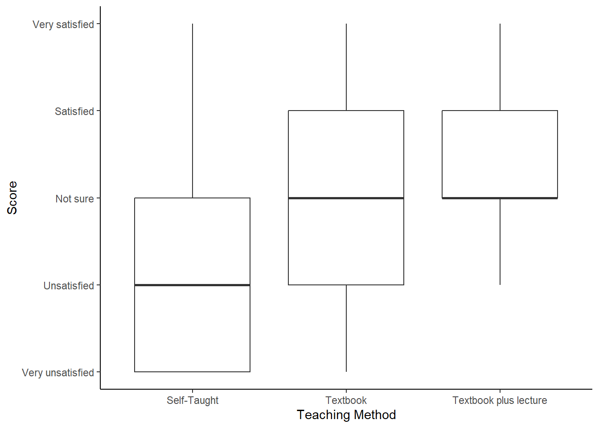

Chapter 10 Predicting more things
You can skip this chapter if . . .
-
You can describe the basic theory of partitioning variation
-
You can run an ANOVA or glm in R
10.1 Partitioning Variation
In the previous chapter, we spent a lot of time defining variance. Part of the reason why we spent so much time on it is because its key to understanding how some more complicated statistics work.
Much of this section is taken from Grafe & Hails’ Modern Statistics for the Life Sciences which I think is a great stats book. If you’re enjoying statistics, or want more detail than is in these pages, its one that I personally used a lot when I was learning.
In this exercise, we’re going to spend more time thinking about variance - and we need to have tidyverse loaded, so you know what to do:
10.1.1 Perfect Worlds vs Reality
Let’s think a little bit about what we mean by this question: does x affect y?
We want to know what proportion of the variation we observe in y can be explained by x.
To do this, we want to think about a perfect example where all of the variation in y can be explained by x.
Let’s create some data:
examples <- tibble (x.perfect = c(1,2,3,4,5,6,7,8,9,10),
y.perfect = c(1,2,3,4,5,6,7,8,9,10),
x.realistic = c(1,2,3,4,4,6,8,8,9,11),
y.realistic = c(2, 2, 4, 5, 5, 5, 7, 8, 9, 9))First, let’s visualise the perfect world:
examples %>%
ggplot (aes(x = x.perfect, y = y.perfect))+
geom_point () +
scale_y_continuous(limits =c(0,10)) +
scale_x_continuous(limits = c(0,10)) +
labs (title = "100% of the variation in y is explained by x") +
theme_classic()Figure: 10.1: 100% of the variation in y is explained by x
In a ‘perfect’ dataset, we see that for every unit increase in x, y increases by the same. There’s a 1:1 relationship between the two.
Of course, we very rarely ever see this in the real world.
How does it look with (slightly) more realistic data?
examples %>%
ggplot (aes(x = x.realistic, y = y.realistic))+
geom_point () +
scale_y_continuous(limits =c(0,10)) +
scale_x_continuous(limits = c(0,10)) +
labs (title = "How much of the variation in y is explained by x?") +
theme_classic()Figure: 10.2: A more realistic example
Most of us looking at this chart would be able to draw a ‘line of best fit’ describing the relationship between x and y in this example. With a linear model we can calculate this exactly.
This is the exact same equation as you would have learned at school:
\[ y = mx + c \]
or
predicted y = gradient * (a value of x) + y intercept
We can ask R to fit a linear model for this data. The function lm asks for a formula argument which looks like y ~ x. The formula is a bit unusual in terms of R language because there are no ‘placeholder’ or ‘default’ values, meaning we can’t type y = y.realistic here. The lm function is part of R’s basic stats code (meaning we don’t need to load any particular library to use it).
##
## Call:
## lm(formula = y.realistic ~ x.realistic, data = examples)
##
## Coefficients:
## (Intercept) x.realistic
## 1.3659 0.7561The output here starts with the Call which reiterates what we specificed in our lm command. Then it gives us:
Coefficient of the intercept (where our model line crosses the y axis)
Coefficient of x.realistic
Since x.realistic is a continuous variable, the x.realistic coeffcient represents the difference in the predicted value of Y for each one-unit difference in x.realistic.
If that’s confusing, let’s run this on the perfect data:
##
## Call:
## lm(formula = y.perfect ~ x.perfect, data = examples)
##
## Coefficients:
## (Intercept) x.perfect
## 1.123e-15 1.000e+00The coefficient for x.perfect is 1. For every 1 step increase in the value of x, our value of y increases by 1.
Our coefficient is very nearly zero (it’s not exactly zero because of a thing called floating point math which is kind of interesting but not super relevant).
We could plug this in to our equation above to predict a value of y. The coefficient of x is the same as the gradient in a simple linear model, and so we can predict y when x = 3:
\[ y = mx + c \]
## [1] 3Perfect!
What if we try our realistic data? If you View(examples) you can see that when x.realistic = 3, y.realistic = 4. Does our linear model predict this?
## [1] 3.6342… Sort of? It doesn’t predict it perfectly, but its pretty close . . .
You might now be wondering, is this significant? You’ll have heard scientists talk about significance a lot. Well, we can find this out by asking R to summarise the model:
##
## Call:
## lm(formula = y.realistic ~ x.realistic, data = examples)
##
## Residuals:
## Min 1Q Median 3Q Max
## -0.9024 -0.6159 0.1220 0.6037 0.8293
##
## Coefficients:
## Estimate Std. Error t value Pr(>|t|)
## (Intercept) 1.36585 0.46584 2.932 0.0189 *
## x.realistic 0.75610 0.07258 10.418 6.25e-06 ***
## ---
## Signif. codes: 0 '***' 0.001 '**' 0.01 '*' 0.05 '.' 0.1 ' ' 1
##
## Residual standard error: 0.7199 on 8 degrees of freedom
## Multiple R-squared: 0.9314, Adjusted R-squared: 0.9228
## F-statistic: 108.5 on 1 and 8 DF, p-value: 6.247e-06This time we get more information. The coefficients are still listed in the table, alongside their standard error, a T Value and a P value. The P value is very small, much smaller than the cut-off of p<0.05. Therefore we must say this is a significant result?
At the top we have residuals which we’ll come to another day, and at the bottom we have an F statistic and a P Value (these are the ones I’d pay attention to if I were you) and an Adjusted R-squared. At the moment this tell us that 92% of the variation in y.realistic can be explained by x.realistic.
And if we wanted, we could add this to our plot from earlier with the addition of a single line of code:
examples %>%
ggplot (aes(x = x.realistic, y = y.realistic))+
geom_point () +
scale_y_continuous(limits =c(0,10)) +
scale_x_continuous(limits = c(0,10)) +
labs (title = "How much of the variation in y is explained by x?") +
theme_classic() + # And add a single line below:
geom_smooth (method = 'lm') 
Figure: 10.3: y.realstic and x.realistic with a fit line
If we were reporting this we would say that:
y.realistic increased with x.realistic. A linear model predicted that for every unit increase in x.realistic, y.realistic would increase by 0.76, and this explained 93% of the variation observed in y.realistic (F1,8 = 108.5, p < 0.001, Figure 10.3)
But what do all these numbers mean? That’s what we’re going to look at:
10.1.2 A Fake Experiment
We’re going to start with a fake experiment to explore this. As you may know, the national animal of Scotland is the unicorn. In our example, Scotland has started farming unicorns (in a very welfare friendly manner, of course) to export more magic dust. Unicorns shed magic dust from their horns every morning, and this is gathered by the farmer.
There’s a belief that unicorns shed more dust when they hear music, and so we set up a trial with three farms:
Farm 1 was our negative control farm, with no intervention.
Farm 2 was our trial farm, where a radio station tuned to music was played over the speakers.
Farm 3 was a positive control farm, and played radio tuned to BBC Radio 4 for thoughtful discussion.
We recorded the raw weekly dust yield of 10 unicorns on each farm, and the data looks like this:
Radio <- tibble (NoRadio = c(150, 130, 121, 90, 98, 100, 98, 100, 113, 111),
RadioMusic = c(112, 127, 132, 150, 112, 128, 110, 120, 98, 107),
RadioDiscussion = c(75, 98, 88, 83, 83, 77, 75, 84, 93, 99))In the majority of our experiments and statistical analyses, we always want to know Does x affect y?.
In this case, we’re asking: Does radio as a background noise affect the magic dust yield of unicorns?
10.1.2.1 Tidying this data
Remember that we want data to be tidy. We should pivot this data so every row is an observation of a unicorn.
Try creating a new dataset caled RadioTidy yourself. RadioTidy should have two columns named “Radio” and “DustYield”. You can check your work in the answers
If you use your own solution to tidy the data remember that R is case sensitive. I have called the columns Radio and DustYield. If your data isn’t named in the same way copying and pasting the following code chunks will give you errors.
10.1.2.2 Visualising our unicorns
We know we should start by visualising our data, but in this example I’m going to visualise it in a few different ways. You wouldn’t normally do this, but I’m trying to demonstrate some things about variance.
RadioTidy %>%
ggplot (aes (x = Radio, y = DustYield)) +
geom_point(aes(shape = Radio, colour = Radio)) +
labs (y = "Dust Yield (Kg)", x = "Radio Condition") +
scale_y_continuous(limits = c(0, 200)) +
theme_classic ()
Figure: 10.4: Magic Dust Yield (kg) by Unicorn Farm
In this chart we have plotted the yield of every single unicorn by farm. We still want to know whether radio affects yield, but we know that some unicorns are probably high dust yielders, and others might be low yielding unicorns. In other words, we know that individuals vary, and so we want to know what happens to the group on average.
But we can also see here that the groups seem to be different. The amount of variation isn’t the same between the groups. In fact, the farm ‘Radio Discussion’ is more closely clustered together than the others.
The variance of a dataset describes how much the data is scattered around the mean. An ANOVA is simply asking: >Is the mean of each group a better predictor than the mean of all the data?.
Let’s start by looking at only one farm (note - you wouldn’t be likely to do this in a real life example, this is for explanation purposes only):
Radio %>%
mutate(UnicornNo = c(1,2,3,4,5,6,7,8,9,10)) %>%
# The mutate function adds a new variable just to plot this one specific chart
# And then we pipe it directly into ggplot, so we're not changing the Radio data
# Remember you can check this with `View(Radio)`, you'll see 'UnicornNo' doesn't exist.
ggplot (aes (x = UnicornNo, y = NoRadio)) +
geom_point() +
labs (y = "Dust Yield (Kg)") +
scale_y_continuous(limits = c(0, 200)) +
scale_x_continuous(breaks = c(0, 2, 4, 6, 8, 10)) +
theme_classic ()Figure: 10.5: Magic dust yield (kg) for Farm 1
Deviations from the mean will be both positive and negative, and the sum of these deviations will always be zero. First, let’s find out the mean dust yield of the farm without any radio . . .
## # A tibble: 1 x 2
## Radio mean
## <chr> <dbl>
## 1 NoRadio 111.We could plot this mean on our chart with an extra line of code:
Radio %>%
mutate(count = c(1,2,3,4,5,6,7,8,9,10)) %>%
ggplot (aes (x = count, y = NoRadio)) +
geom_point() +
labs (y = "Dust Yield (Kg)") +
scale_y_continuous(limits = c(0, 200)) +
theme_classic () +
# This new line basically draws a line on our chart based on the mean we just calculated
geom_hline(yintercept = 111.1) 
Figure: 10.6: Magic dust yield (kg) for Farm 1, Mean Line Added
10.1.2.3 Deviation from the group mean
We want to know what the deviation from the mean of the group is for each individual. We can ask R to calculate this for us using the handy mutate function:
## # A tibble: 10 x 4
## NoRadio RadioMusic RadioDiscussion NoRadioDeviation
## <dbl> <dbl> <dbl> <dbl>
## 1 150 112 75 -38.9
## 2 130 127 98 -18.9
## 3 121 132 88 -9.9
## 4 90 150 83 21.1
## 5 98 112 83 13.1
## 6 100 128 77 11.1
## 7 98 110 75 13.1
## 8 100 120 84 11.1
## 9 113 98 93 -1.9
## 10 111 107 99 0.100You can check that the sum of NoRadioDeviation does add to zero (or at least very close to it given some rounding errors because of floating point math):
Radio %>%
mutate (NoRadioDeviation = (mean(NoRadio) - NoRadio)) %>%
summarise ("Sum of Deviations from No Radio Mean" = sum(NoRadioDeviation))## # A tibble: 1 x 1
## `Sum of Deviations from No Radio Mean`
## <dbl>
## 1 -0.0000000000000568No matter what your dataset looks like, no matter what numbers are in there, this will always be true.
10.1.2.4 Calculating variance from deviations
Because the deviations will always sum to 0, the raw deviations are not very useful.
So how can we compare the deviation (variance) between two datasets?
If we square the deviations and then sum them we have a more useful measure of variance that we call Sums of Squares (SS)
Radio %>%
mutate (NoRadioDeviation = (mean(NoRadio) - NoRadio),
SquaredNoRadioDeviation = (NoRadioDeviation*NoRadioDeviation))## # A tibble: 10 x 5
## NoRadio RadioMusic RadioDiscussion NoRadioDeviation SquaredNoRadioDeviation
## <dbl> <dbl> <dbl> <dbl> <dbl>
## 1 150 112 75 -38.9 1513.
## 2 130 127 98 -18.9 357.
## 3 121 132 88 -9.9 98.0
## 4 90 150 83 21.1 445.
## 5 98 112 83 13.1 172.
## 6 100 128 77 11.1 123.
## 7 98 110 75 13.1 172.
## 8 100 120 84 11.1 123.
## 9 113 98 93 -1.9 3.61
## 10 111 107 99 0.100 0.0100Sums of Squares are useful because they don’t sum to 0, but they’re still influenced by the number of data points we have (e.g. if we had one more unicorn in the No Radio farm the sum of squares would have to increase).
So we calculate the variance of the dataset by:
\[\sigma^2 = \frac{SumsofSquares}{n-1} \] $$
Variance is therefore a measure of the variability of a dataset that takes the size of the dataset into account. And we can use variance to compare variability across different datasets. It’s very useful!
R, we know, has a very handy function to calculate variance automatically:
## # A tibble: 1 x 1
## `Variance No Radio`
## <dbl>
## 1 334.But if you’re not convinced . . .
Radio %>%
mutate (NoRadioDeviation = (mean(NoRadio) - NoRadio),
SquaredNoRadioDeviation = (NoRadioDeviation*NoRadioDeviation)) %>%
summarise(SumSquaresNoRadio = sum(SquaredNoRadioDeviation))## # A tibble: 1 x 1
## SumSquaresNoRadio
## <dbl>
## 1 3007.And then divide that by n-1:
## [1] 334.110.1.2.5 Partitioning Variation
Remember, in this experiment we can see that there is variation around dust yields. What we want to know is:
How much of this variation is due to our explanatory variable (what kind of radio they listened to)
How does x affect y?
10.1.2.5.1 Imaginary Scenario 1
Let’s imagine a scenario where the condition (our categorical variable) explains almost all of the variance in the dataset.
It would look like this:
Sce1 <- tibble (Condition1 = c(99,100,101,99,100,101,99,101,100,101),
Condition2 = c(120,121,122,120,121,122,120,123,121,120),
Condition3 = c(83,84,85,85,84,83,83,84,85,86)) %>%
pivot_longer (cols = c(Condition1:Condition3), names_to = "Condition", values_to = "DustYield") %>%
mutate (Count = c(1:30))
# In the code above I've gathered the data into a tidy format
ImaginaryScenario1 <- Sce1 %>%
ggplot (aes (x = Count, y = DustYield)) +
geom_point(aes(shape = Condition, colour = Condition)) +
labs (y = "Dust Yield (Kg)", x = "Unicorn ID Number") +
scale_y_continuous(limits = c(0, 200)) +
theme_classic ()
# I have also made this chart an object because we're going to update it
# It's quicker to do this as an object
# You can compare how we update this chart with how we update the ones above.
ImaginaryScenario1
We could fit the mean of the dataset on this:

Let’s compare the overall mean with the group means, and see which one is the best guess for any given data point. Remember - if the condition is explaining a lot of the variation around our response, we’ll see less deviation from each group mean than the overall mean.
## # A tibble: 3 x 2
## Condition mean
## <chr> <dbl>
## 1 Condition1 100.
## 2 Condition2 121
## 3 Condition3 84.2ImaginaryScenario1 +
geom_hline(yintercept = mean(Sce1$DustYield)) +
geom_segment(aes(x =1, y = 100.1, xend =10, yend = 100.1, color = "red")) +
geom_segment(aes(x = 11, y = 121.0, xend = 20, yend = 121.0, color = "green")) +
geom_segment (aes(x = 21, y = 84.2, xend = 30, yend = 84.2, color = "blue")) +
theme (legend.position = "none")
In this case, the individual group means are a better description of the group than the overall population mean. Any statistics we were to apply would simply put a number to what we see on this chart.
So let’s look at a second scenario:
Sce2<-tibble (Condition1 = c(84,86,123,95,87,110,99,95,121,121),
Condition2 = c(83,115,85,85, 110,105,84,115,101,100),
Condition3 = c(84,122,80,80,101,83,83,99, 120,120)) %>%
pivot_longer (cols = c(Condition1:Condition3), names_to = "Condition", values_to = "DustYield") %>%
mutate (Count = c(1:30))
Sce2 %>%
group_by(Condition) %>%
summarise(mean = mean (DustYield))## # A tibble: 3 x 2
## Condition mean
## <chr> <dbl>
## 1 Condition1 102.
## 2 Condition2 98.3
## 3 Condition3 97.2Now we chart it, and add our segment lines for each group’s mean:
Sce2 %>%
ggplot (aes (x = Count, y = DustYield)) +
geom_point(aes(shape = Condition, colour = Condition)) +
labs (y = "Dust Yield (Kg)", x = "Unicorn ID Number") +
scale_y_continuous(limits = c(0, 200)) +
theme_classic () +
geom_hline(yintercept = mean(Sce2$DustYield)) +
geom_segment(aes(x =1, y = 102.1, xend =10, yend = 102.1, color = "red")) +
geom_segment(aes(x = 11, y = 98.3, xend = 20, yend = 98.3, color = "green")) +
geom_segment (aes(x = 21, y = 97.2, xend = 30, yend = 97.2, color = "blue")) +
theme (legend.position = "none")
In this second scenaro, the population mean is not very different from the means of each of the three conditions. In fact, it’s hard to see some of those means on the chart! We haven’t successfully partitioned off any of the dataset’s varaiance by looking at each of the condition means.
In this second scenario, the explanatory variable is not explaining very much of the response variable at all.
10.1.2.6 Our Scenario
If we plot our unicorn data in the same format:
RadioTidy %>%
mutate(count = c(1:30)) %>%
ggplot (aes (x = count, y = DustYield)) +
geom_point(aes(shape = Radio, colour = Radio)) +
labs (title = "Magic Dust Yield(kg)", y = "Dust Yield (Kg)", x = "Unicorn ID Number") +
scale_y_continuous(limits = c(0, 200)) +
theme_classic ()
10.1.2.6.1 Going Back to Sums of Squares
In our two imaginary scenarios above we were (roughly) partitioning variances by drawing lines on our charts - much like we could draw a line of best fit on the perfect data chart earlier.
When we run a model, we want to describe that chart mathematically.
When we calculated variance earlier, we calculated the variance in the condition mean mean (e.g. the variance for No Radio data). We can call this the Error Sum of Squares (SSE) which is the sum of the squares of the deviations of the data around the means of each group.
We could also calculate …
- Total Sums of Squares (SSY), the sums of squares of the deviations of the data around the population mean.
- Condition Sums of Squares (SSF), the sums of squares of the deviations of each condition mean from the population mean.
But why would we use any sums of squares when we already establishd that variance was a better measure?
Let’s rearrange our data so we have for each ‘row’ the condition mean and total mean. We’re going to call this dataset MFY for short because:
M is the global mean
F is the condition mean
Y is the ‘response variable’
MFY <- RadioTidy %>%
mutate ("Y" = DustYield) %>%
mutate ("M" = mean(Y)) %>%
# If we now ask R to group the data, it will calculate the mean per group:
group_by(Radio) %>%
mutate ("F" = mean(Y)) %>%
# Remember to ungroup after!
ungroup()
# I suggest you View(MFY)We can also calculate:
MY (The data - Dataset mean)
MF (The condition mean - dataset mean)
FY (The data - condition mean)
We’ve calculated a lot of deviations here - but we said we always wanted to square those deviations, so:
MY2, MF2 & FY2 are the squares of the deviations, but we need a sum of squares for each one.
## # A tibble: 1 x 3
## SumSquareMY SumSquareMF SumSquareFY
## <dbl> <dbl> <dbl>
## 1 12053. 6301. 5752.But we also have one more bit of information we need to consider - what we call degrees of freedom. Let’s say we want to put those sum squares into a nice table. We could also add in a row talking about the degrees of freedom.
There are degrees of freedom for:
M - which is 1. There is only 1 bit of information in the whole group mean
F - which is 3. There are only 3 means in the conditions.
Y - which is 30. We have 30 data points to observe.
If you were to calculate the degrees of freedom (dof) for MY, MF and FY - you can run the same calculation:
MY (Ydof - Mdof = 30 - 1 = 29)
MF (Fdof - Mdof = 3 - 1 = 2)
FY (Ydof - Fdof = 30 - 3 = 27)
We can calculate something called mean squares which is:
Mean Squares = Sum of Squares / Degrees of Freedom
So:
MS-MY = (12053.2/ 29) = 415.6276
MS-MF = (6301.4/2) = 3150.7
MS-FY = (5751.8/27) = 213.0296
And this is pretty much all we can do with the data.
# I'm using the package 'knitr' to display this.
knitr::kable(MFY %>%
summarise(SumSquareMY = sum(MY2),
SumSquareMF = sum(MF2),
SumSquareFY = sum(FY2),
MeanSquareMY = sum(MY2)/29,
MeanSquareMF = sum(MF2)/2,
MeanSquareFY = sum(FY2)/27))| SumSquareMY | SumSquareMF | SumSquareFY | MeanSquareMY | MeanSquareMF | MeanSquareFY |
|---|---|---|---|---|---|
| 12053.2 | 6301.4 | 5751.8 | 415.6276 | 3150.7 | 213.0296 |
Earlier we said variance was important because it took into account the size of the dataset.
Mean Squares are very similar to the variance calculation, because they’re a measure of deviation in relation to the size of the dataset.
10.1.2.7 The Importance of Mean Squares
If the condition (radio) has no effect on the data, then the variation we would see between the farms would be similar to the variation we saw within any given farm. It would be like Scenario 2, where the mean of the farm was no more use to us than the mean of the overall population.
If that were the case: the Condition Mean Square (FMS) / Error Mean Square (EMS) = 1
Let’s look again at that last table.
knitr::kable(MFY %>%
summarise(SumSquareMY = sum(MY2),
SumSquareMF = sum(MF2),
SumSquareFY = sum(FY2),
MeanSquareMY = sum(MY2)/29,
MeanSquareMF = sum(MF2)/2,
MeanSquareFY = sum(FY2)/27))| SumSquareMY | SumSquareMF | SumSquareFY | MeanSquareMY | MeanSquareMF | MeanSquareFY |
|---|---|---|---|---|---|
| 12053.2 | 6301.4 | 5751.8 | 415.6276 | 3150.7 | 213.0296 |
And now we will take the Condition Mean Square and Error Mean Squares from that table:
FMS = 3150.7
ENS = 213.0296
And we’ll call this the F Ratio.
## [1] 14.7899610.1.2.8 F Ratios and F Distributions
Because the mean squares are standardised by the size of the dataset, we can mathematically calculate the range and likelihood of any F-Ratio. This is called the F Distribution.
You can look up F distributions for an alpha level of 0.05. Click here to go directly there. We are interested in the ratio between 2 and 27 degrees of freedom, which gives us a critical F ratio of 3.3541, which our F Ratio (14.79) is much bigger than.
In fact, if we were to plot a curve of the F Distribution between 2 and 27 degrees of freedom, less than 0.001% of the total area would be more than 14.79.
10.1.2.9 In Conclusion . . .
The probability of getting an F-Ratio as large as 14.8 (or larger), if the null hypothes (x has no effect on y) is true, is less than 0.001
Or: F (between 2 and 27 degrees of freedom) = 14.79, and P < 0.001
CONGRATULATIONS!
You just ran an ANOVA completely by hand.
10.1.2.10 Prove It
Of course, we don’t run ANOVAs by hand. We don’t use all these steps to run an ANOVA. Instead we go back to the RadioTidy data, which if you View(RadioTidy), you will note doesn’t have any of our squares or sum squares or mean squares calculated.
And we ask R to run an ANOVA:
## Df Sum Sq Mean Sq F value Pr(>F)
## Radio 2 6301 3151 14.79 4.6e-05 ***
## Residuals 27 5752 213
## ---
## Signif. codes: 0 '***' 0.001 '**' 0.01 '*' 0.05 '.' 0.1 ' ' 1And that command summary(ANOVA) gives us a table exactly like the one we calculated by ourselves.
When we say that radio has a significant effect on the dust yield of unicorns in an ANOVA (F2,27=14.79, P<0.001) - you now know exactly what those numbers refer to.
And now that you’ve run it by yourself, what would you recommend to the unicorn farmers of Scotland?